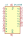
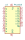
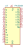
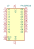

| Symbol |
Description |

GAL16V8 | Description: Programmable Logic Array, DIP-20/SOIC-20/PLCC-20
Keys: GAL PLD 16V8
Datasheet: None |

PAL16L8 | Description: Programmable Logic Array, DIP-20
Keys: PAL PLD 16L8
Datasheet: None |
| PAL20 | Description: generic 20-pin Programmable Array Logic (PAL) device
Keys: logic programmable PAL |

PAL20L8 | Description: Programmable Logic Array, DIP-24
Keys: PAL PLD 20L8
Datasheet: None |

PAL20RS10 | Description: Programmable Logic Array, DIP-24 (Narrow)
Keys: PAL PLD 20RS10
Datasheet: None |
| PAL24 | Description: generic 24-pin Programmable Array Logic (PAL) device
Keys: logic programmable PAL |